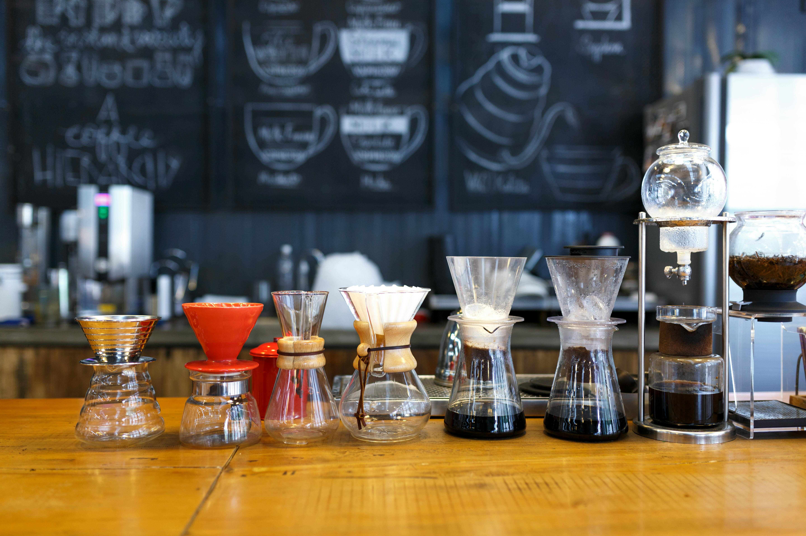
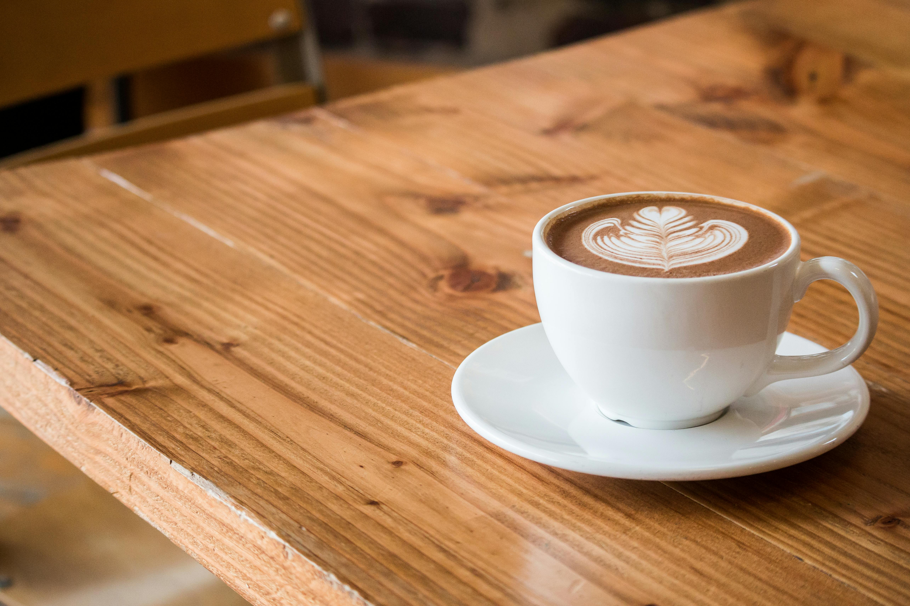
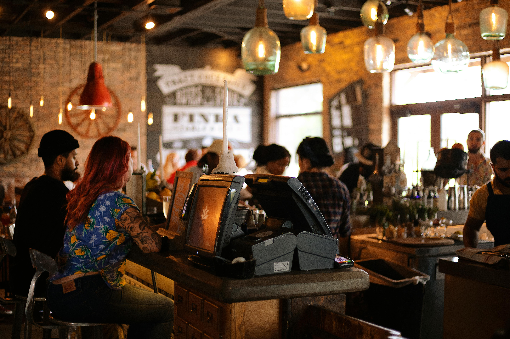

Café de spécialité !

Matériel pour le café

Autour du café
Bons cafés. Bons gâteaux. Bon temps.

L’équipe de Simplon Coffee Craft vous accueille avec le sourire depuis 2013, en plein cœur de Lens, dans un lieu pensé comme un cocon où il fait bon vivre. Ici, chaque détail a été imaginé pour créer une ambiance conviviale, mêlant la chaleur des traditions artisanales à une touche de modernité discrète mais élégante. Notre amour pour le café ne se limite pas à une simple boisson : c’est une passion partagée, une expérience sensorielle que nous vous invitons à vivre. Chaque tasse est soigneusement préparée avec des grains de qualité, rigoureusement sélectionnés, fraîchement moulus et infusés avec justesse. Pour accompagner votre pause café, nous vous proposons une sélection de gâteaux faits maison, élaborés avec des ingrédients simples et authentiques, dans le respect des saisons et de la gourmandise. Que vous veniez travailler, lire, discuter ou simplement vous détendre, Simplon Coffee Craft est votre refuge chaleureux pour savourer un moment de plaisir sincère.
Café de spécialité !

Matériel pour le café

Autour du café
“
Un endroit fabuleux, chaleureux et cosy. Le café est juste exceptionnel !
- Emma
“
J’adore venir ici pour lire ou bosser. Toujours bien reçu !
- Karim
“
Le meilleur spot café de Lens ! Je recommande vivement.
- Sophie

12 rue de la Brûlerie, 62300 Lens
Lundi - Samedi : 8h - 18h
Dimanche : 9h - 14h